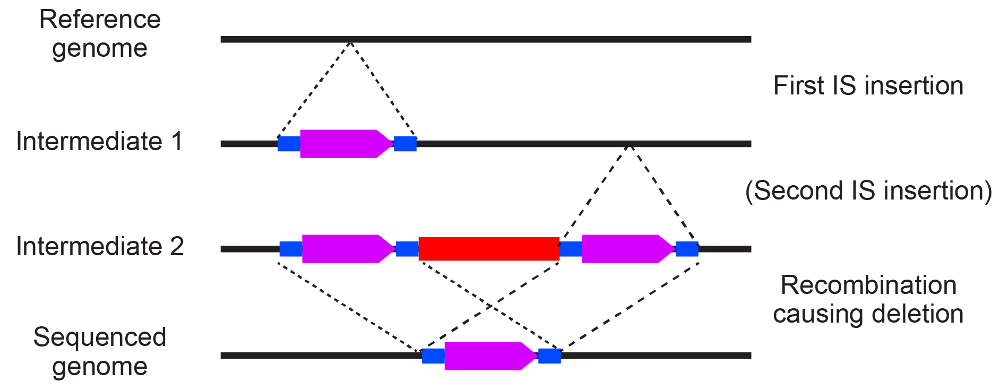
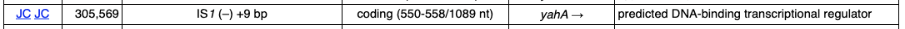
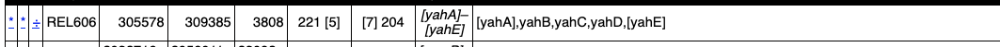
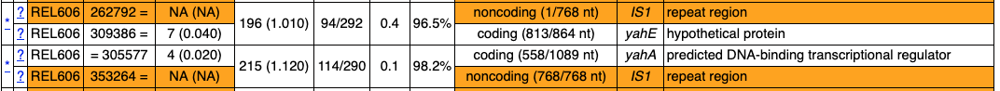

Common Curation Cases
Back to the Main Curation Tutorial Page
This is a sort of bestiary of common curation cases and how to resolve them.
You'll want to keep the GenomeDiff File Format specification handy for understanding how we manually curate mutation entries.
IS element insertion plus adjacent IS-mediated deletion¶
IS elements (simple bacterial transposons) are are often drivers of microbial evolution. They can insert into genes and disrupt their function. Because multiple copies of IS elements in a genome also provide homologous sequences for recombination, they also catalyze deletions. In longer evolution experiments, multi-step events can occur where a new IS copy inserts at a location and then there is recombination between that copy and another new IS element insertions nearby, resulting in a deletion that leaves behind one IS copy.
Note
You will only get clean predictions of IS element endpoints if they are annotated in your reference genome. It is highly recommended that you do this! For more information, see Reference Sequence File Formats.
For these events, you will typically see three unassigned evidence items, two JC items that are between unique positions in the genome and opposite sides of the same IS element and one MC item that indicates the region between the corresponding reference positions where the IS elements inserted has been deleted in the sample.
How do we annote these events in the GenomeDiff file so that we can generate the resulting genome sequence AND properly count the number of IS element insertion events that have occurred in the lineage leading to the sequenced genome?
Three different cases are possible.
Case 1: First IS element insertion is on the left side of the deletion¶
This situation looks like this:

The parentheses around Intermediate 2 indicate that this may be a short-lived intermediate. That is, the second IS element insertion and the deletion may happen at the same time. Maybe the new IS element inserts and during repair of an IS insertion intermediate and homologous recombination chooses the other copy as a template, resulting in loss of the region between and one IS copy in the repaired genome.
Example from the LTEE¶
Here's a concrete example of how we annotated one of these event that occurred in population A–5 from the E. coli LTEE.
First, we sequenced an earlier genome (A–5 50000-generation Clone REL11340) and see this IS element insertion predicted by breseq:
MOB Mutation (A–5 50000-generation Clone REL11340)

Second, we sequenced a later genome (A–5 75000-generation Clone B). In the breseq results, we don't see the IS element insertion anymore. Instead, we see the MC and matching JC unassigned evidence items indicative of an IS element insertion followed by an IS-mediated deletion.
Unassigned MC Evidence (A–5 75000-generation Clone B)

Unassigned JC Evidence (A–5 75000-generation Clone B)

Notice how the JC connect the nucleotides before and after the boundaries of the MC to opposite sides of the IS1 element.
We would annotate this event with two lines in the GenomeDiff file:
MOB 1000 . REL606 305569 IS1 -1 9
DEL 1001 . REL606 305569 3817 mediated=IS1 within=1000:2
There's an advanced GenomeDiff tag being used here: within. The syntax for this is within=mutation_id:copy. It is separated from the rest of the line by a tab.
The within information is necessary because gdtools APPLY will first add the IS1 element insertion with a nine-base pair duplication. After this, there are two different places that have the original coordinates 305569-305578 in the genome that is being constructed, one before and one after the new IS1 element insertion. We need the deletion to begin within the second of these coordinates so it is after the IS element and removes the newly duplicated bases.
Alternately, you can annotate the mutations in this way:
MOB 1000 . REL606 305569 IS1 -1 9
MOB 1001 . REL606 309386 IS1 -1 9 before=1002
DEL 1002 . REL606 305569 3826 between=IS1 within=1000:2 apply_size_adjust=-9
This latter method should be used if you have sequenced other genomes from the same population and found some that have both IS element insertions but not the deletion between them (ones that look like Intermediate 2).
There's a lot going on here, which is why you'd normally do the simpler method above if possible.
First, we added the before=1002 tag to make sure the second MOB occurs before the deletion, because we need to remove the IS element and its left-side target site duplication with the deletion. (These tags have the syntax before=mutation_id). Second, the size of the DEL is increased by nine base pairs (3817 + 9 = 3826). This allows the DEL to include the size of the second MOB when it is being applied (because its start is before where that inserts and its end is after where it inserts). Third, we use a special apply_size_adjust=-9 tag to decrease the size of the deletion by the size of the target site duplication of the second MOB. (These tags have the syntax apply_size_adjust=offset.) This makes it so we don't delete the second copy of the target site deletion, because those bases (309386-309396) are preserved. We can't do this by decreasing the size of the DEL because then it would completely contain and delete the second MOB.
Note
While both of these will result in the same final genome sequence if
you use them with gdtools APPLY There is a subtle difference in how breseq
will analyze the resulting files with gdtools COUNT. In the first case, with
two lines it will count two mutations, because it assumes that the second IS
element insertion and the deletion happened as one event. In the second case it
will count three mutations. In both cases, it will count that there were two
new IS element insertions involved in those mutations. A further assumption of the
second method is that we know the duplication size of the second IS1 insertion.
Case 2: First IS element insertion is on the right side of the deletion¶
What if the IS element insertion on the right had occurred first?
The situation would look like this:
We would annotate this event with two lines in the GenomeDiff file.
MOB 1000 . REL606 309386 IS1 -1 9
DEL 1001 . REL606 305578 3817 mediated=IS1 within=1000:1
Case 3: No information about the first IS insertion¶
Sometimes you will only have the sequence of the final sample. In this case, you can't unambiguously annotate the details of the first intermediate. In this case, we recommend annotating the left IS element first with a target site insertion of zero base pairs (essentially indicating it is unknown). Then annotate the deletion to the right of it.
For the example above, you would use this:
MOB 1000 . REL606 305569 IS1 -1 0
DEL 1001 . REL606 305570 3808 mediated=IS1
Notice that we don't need the within tag because we moved the position where the deletion
begins to right after the IS element and it has zero for the target site duplication. We also
decreased the size of the deletion by 9 bases relative to the above scenarios because
we do not need to delete the nine duplicated target site bases (they are never added).
Gene conversions of rRNA operons or other repeats¶
To be added!
Duplications/Amplifications¶
To be added!